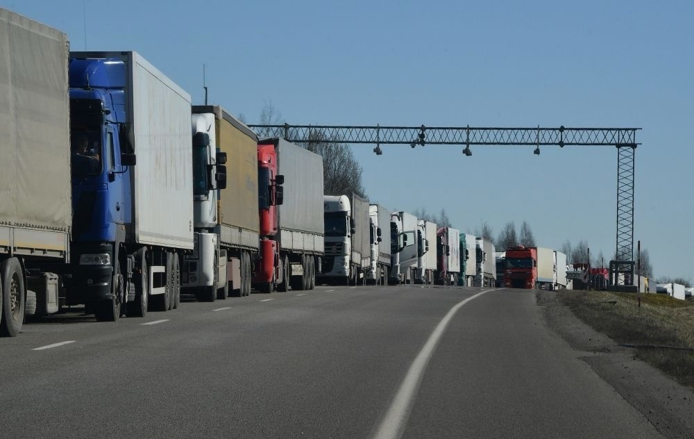

Аспекты развития международных автомобильных перевозок
Международная автомобильная перевозка представляет собой процесс транспортировки грузов и (или) пассажиров между двумя или более странами, когда груз или пассажир в соответствии с договором перевозки перемещается или перевозится за границу.
Из особенностей договора международной автомобильной перевозки можно выделить то,
что в ходе его исполнения соответствующие материально-правовые нормы применяются на основании различных коллизионных принципов. Так, при погрузке руководствуются законом страны отправления, при выдаче груза в конечном пункте – законом страны назначения. В других случаях применяется закон перевозчика или же закон страны суда. Подлежащее применению к международной перевозке право может быть указано в транспортном документе, выданном перевозчиком
Общие вопросы обеспечения функционирования автомобильного транспорта находятся в ведении Федерального Собрания Российской Федерации, Президента Российской Федерации и Правительства Российской Федерации. Федеральное Собрание влияет на этот процесс путём принятия федеральных законов.
Президент Российской Федерации учредил органы исполнительной власти - Министерство внутренних дел Российской Федерации и Государственную инспекцию безопасности дорожного движения, издаёт указы, определяющие их полномочия. Правительством Российской Федерации учреждены Министерство транспорта Российской Федерации и Федеральная служба по надзору в сфере транспорта, ряд других органов, функционирование которых влияет на перевозочную деятельность. Правительство Российской Федерации утверждает положения об этих органах, а также стратегические и нормативные правовые акты, содержащие конкретные общеобязательные правила, применение которых создаёт надлежащие условия для автомобильных перевозок пассажиров и грузов.
Управление общественно-полезными процессами является одной из основных функций современного государства. Важным направлением управленческой деятельности является управление автомобильными перевозками пассажиров и грузов. Без этой государственной деятельности не мыслима жизнь современного общества, взаимодействие предприятий и других организаций
Транспортный контроль осуществляется путем проведения проверок транспортных средств, а также имеющихся у водителей разрешений и других необходимых документов. При обнаружении (выявлении) несоответствия весовых и (или) габаритных параметров транспортного средства, отсутствия разрешительных и транспортных документов, а также отличительного знака государства регистрации транспортного средства должностные лица таможенных органов обязаны принимать в отношении перевозчика (иностранного, российского) или его водителя решение о возбуждении дела об административном правонарушении на транспорте или в области дорожного движения.
С особым вниманием относятся таможенным грузам, которые подлежат автомобильной перевозке в другие страны или ввозятся транспортом на территорию России. Так называют грузы, которые перемещают через границу какого-либо государства.
Таможенный контроль преследует несколько целей. Во-первых, стоит задача обнаружения транспортного средства, оборудованного для сокрытия товаров для избегания таможенного контроля и недопущения использования такой автомобильной техники в дальнейшем. Во-вторых, процедура выявляет грузовики, пересекающие границу с другими целями, а не только для транспортировки официальных грузов. В-третьих, ведется проверка того, насколько АТС соответствует техническим требованиям, предъявляемым для доставки тех или иных грузов.
Контроль за международными автомобильными перевозками осуществляется на основе международных договоров и национального законодательства. Это включает проверку соблюдения правил перевозок, таможенного оформления грузов, наличия необходимых документов у водителей и транспортных средств. Однако, несмотря на наличие обширной нормативной базы, были выявлены некоторые проблемы, такие как недостаточная прозрачность процесса контроля, отсутствие четких критериев для определения нарушений и недостаточная ответственность за нарушение правил перевозок.
